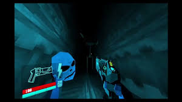
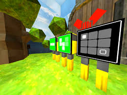
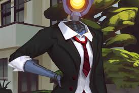
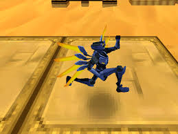
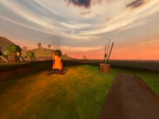
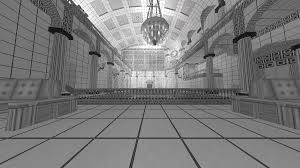
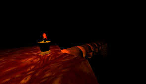
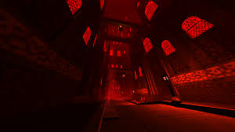

Secret Levels

0-S
SOMETHING WICKED is the secret mission for the PRELUDE, and can be accessed through the mission 0-2 THE MEATGRINDER. Its sole enemy is Something Wicked; a fast, indestructible creature that can destroy V1 instantly.

1-S
THE WITLESS is the secret mission for the LIMBO layer, and can be accessed through the mission 1-1 HEART OF THE SUNRISE. The entire level is a direct reference to the 2016 puzzle/exploration game The Witness.

2-S
ALL-IMPERFECT LOVE SONG is the secret mission for the LUST layer, and can be accessed through 2-3 SHEER HEART ATTACK. It starts seemingly as a text-only horror story, then quickly segues into a dating sim scenario featuring the protagonist and Mirage.

4-S
CLASH OF THE BRANDICOOT is the secret mission for the GREED layer, and can be accessed through 4-2 GOD DAMN THE SUN. It is a direct homage to the Crash Bandicoot series. Its title is wordplay of "Clash of the Brands", along with "Crash Bandicoot".

5-S
I ONLY SAY MORNING is the secret level of the WRATH layer, which is located in 5-1 IN THE WAKE OF POSEIDON. It's located on a small, rainy, and grassy island with a single pond full of black fish in the middle, as well as two separate caves, a cabin with a table, bookshelf, two barrels of bait and kitchen, a dormant Cerberus, a well, and a vast ocean surrounding the island.

7-S
7-S: HELL BATH NO FURY is the secret mission for the VIOLENCE Layer and can be accessed through the mission 7-3 NO SOUND, NO MEMORY. The mission takes place in The Library of Babel, and involves the player going through a seemingly standard level, before being required to "CLEAN UP YOUR MESS!" This is done using a power-washer (to clean up blood), and a vacuum (to clean up "Litter," which includes corpses and giblets), which are both variants of the same weapon, held in slot 6. The exit will open once the player cleans all previously dirty areas.
Prime Sanctums

P-1
SOUL SURVIVOR is the first Prime Sanctum, accessed through the hidden Perfect Door in 3-1 BELLY OF THE BEAST. The door will only open upon achieving a "Perfect" rank on every mission in both the Prelude and Act I.
